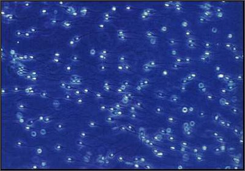
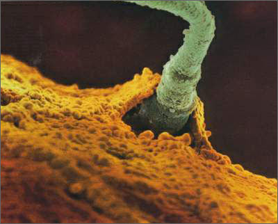
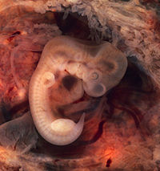

Minggu ke-1 :
Minggu ini sebenarnya masih periode menstruasi, bahkan pembuahan pun
belum terjadi. Sebab tanggal perkiraan kelahiran si kecil dihitung
berdasarkan hari pertama haid terakhir Anda
Proses pembentukan antara sperma dan telur yang memberikan
informasi kepada tubuh bahwa telah ada calon bayi dalam rahim. Saat ini
janin sudah memiliki segala bekal genetik, sebuah kombinasi unik berupa
46 jenis kromosom manusia. Selama masa ini, yang dibutuhkan hanyalah
nutrisi (melalui ibu) dan oksigen.
Sel2 telur yang berada didalam rahim, berbentuk seperti
lingkaran sinar yg mengelilingi matahariSel ini akan bertemu dengan
sel2 sperma dan memulai proses pembuahan

5 juta sel sperma sekaligus berenang menuju tujuan akhir mereka yaitu
menuju sel telur yang bersembunyi pada saluran sel telur. Walaupun
pasukan sel sperma ini sangat banyak, tetapi pada akhirnya hanya 1 sel
saja yang bisa menembus indung telur.

Pada saat ini kepala sel sperma telah hampir masuk. Kita dapat melihat
bagian tengah dan belakang sel sperma yang tidak henti-hentinya berusaha
secara tekun menerobos dinding indung telur


Minggu ke-2 :
Pembuahan terjadi pada akhir minggu kedua. Sel telur yang
telah dibuahi membelah dua 30 jam setelah dibuahi. Sambil terus
membelah, sel telur bergerak di dalam lubang falopi menuju rahim.
Setelah membelah menjadi 32, sel telur disebut morula.
Sel-sel
mulai berkembang dan terbagi kira-kira dua kali sehari sehingga pada
hari yang ke-12 jumlahnya telah bertambah dan membantu blastocyst
terpaut pada endometrium

Minggu 3:
Sampai usia kehamilan 3 minggu, Anda mungkin belum sadar jika sedang
mengandung. Sel telur yang telah membelah menjadi ratusan akan
menempel pada dinding rahim disebut blastosit. Ukurannya sangat kecil,
berdiameter 0,1-0,2 mm.

Minggu ke-4 :
Kini, bayi berbentuk embrio. Embrio memproduksi hormon
kehamilan (Chorionic Gonadotropin - HCG), sehingga apabila Anda
melakukan test kehamilan, hasilnya positif.
Janin mulai membentuk struktur manusia. Saat ini telah terjadi
pembentukan otak dan tulang belakang serta jantung dan aorta (urat
besar yang membawa darah ke jantung).